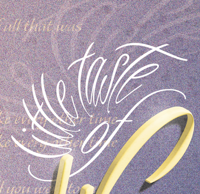
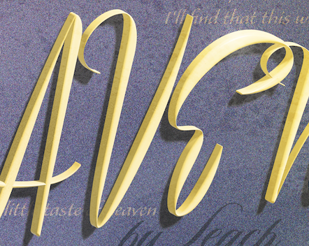

DECORATIVE SONG POSTER
CONCEPT, 2022
ILLUSTRATOR, PHOTOSHOP
18"x24"
I created a poster for the 4D song “A Little Taste of Heaven”. 4D music uses audio technology to create a 360-degree sound experience--sound can feel like it begins from the left and moves to the right, etc. To portray the ethereal feeling of 4D music, I aligned the lyrics to the left, center, and right, so the eyes could move in a similar way to the experience one hears. I also used faintly warped words, textures, and colors to add depth and emotion.